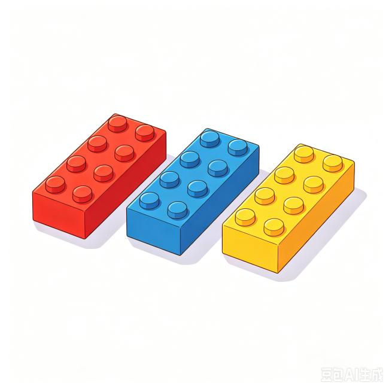

第一课 / 课后复习
数字小乐园一起用中文说一说！
一，一块积木。一，一辆汽车。
点图片，听中文，再自己说一说！
123

小积木，大表达 ✨第一站 / 数字和事物
先说数字，再说事物
🚂 数字儿歌 · 跟着念
一二三，三二一，一二三四五。
一二三，三二一，五四三二一。
看一看，唱一唱，再和家长一起念一句。
02 / 听一听，拿一拿
听一听，拿积木
先听一听，再把积木放进托盘。
👇 点一下积木，或者拖到下面的托盘里。
🧱 积木在这里
拿多了？点托盘里的积木，就能放回去。
准备好后，点击“听一个任务”。
03 / 拿糖果
你想要几块糖果？
🍬 小小糖果店 🍬
点一点糖果，把想要的糖果放进篮子里。
糖果已经准备好啦
🧺 我的糖果篮
可以点击，也可以拖进去。点篮子里的糖果，就能放回去。
你想要几块糖果？自己选一选吧！
选好啦，你真棒！
拿到糖果啦，你想对店员说什么？
交换角色 · 让我来问
孩子当店员，问家长：“你要几块糖果？”
家长回答：“我要两块糖果。”
孩子递糖果：“给你。”
家长：“谢谢。”孩子：“不客气。”
可以用玩具假装糖果。愿意说“两块”也很棒。
04 / 搭一搭，说一说
我的积木小高塔
每搭一块，就说一个中文数字。
准备好，开始搭吧！
🚀 小火箭 · 一起倒数
听完倒数，再请孩子当指挥员，带家长说一遍。
🔎 找数字（选做）
听一听，机器人想找谁？
数字按钮的顺序每轮都会变化。
05 / 三天亲子作业
每天一点点，中文多说一点
按作业安排，分三天完成，每天约15分钟，可拆成几次短游戏。★为基础活动，不需要书写。
和家长一起玩，完成后再打勾。
打卡保存在当前浏览器。勾选表示已参与活动，不代表系统评定口语。